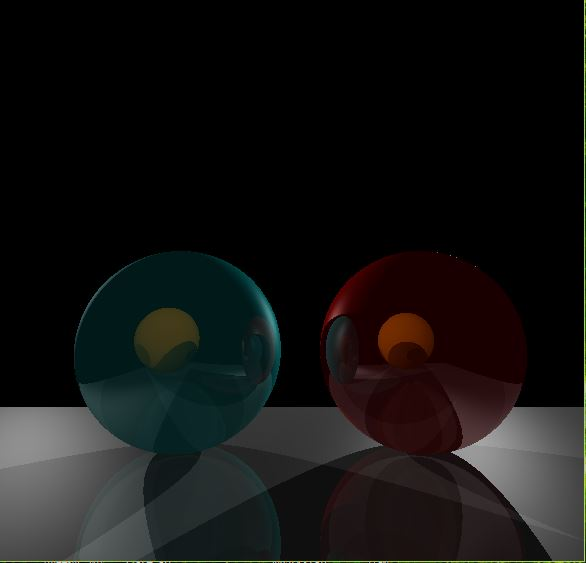

The Logo Of Shandong Univerdity
In this experiment, we need to implement raytracing using opengl and C++
Similar to the third experiment, I don't change too much of the source code.

When a ray hits a surface, it can generate up to three new types of rays: reflection, refraction, and shadow.A reflection ray is traced in the mirror-reflection direction. The closest object it intersects is what will be seen in the reflection. Refraction rays traveling through transparent material work similarly, with the addition that a refractive ray could be entering or exiting a material. A shadow ray is traced toward each light. If any opaque object is found between the surface and the light, the surface is in shadow and the light does not illuminate it. The ray tracing added more realism to ray traced images
To acculate the speed of rendering , I take the adaptive depth control,which means that we stop generating reflected/transmitted rays when the computed intensity becomes less than a certain threshold. We must always set a certain maximum depth or else the program would generate an infinite number of rays. But it is not always necessary to go to the maximum depth if the surfaces are not highly reflective. To test for this the ray tracer must compute and keep the product of the global and reflection coefficients as the rays are traced.Example: let Kr = 0.5 for a set of surfaces. Then from the first surface the maximum contribution is 0.5, for the reflection from the second: 0.5 * 0.5 = 0.25, the third: 0.25 * 0.5 = 0.125, the fourth: 0.125 * 0.5 = 0.0625, the fifth: 0.0625 * 0.5 = 0.03125, etc. In addition we might implement a distance attenuation factor such as 1/D2, which would also decrease the intensity contribution.
To acculate the speed of rendering, I enclose groups of objects in sets of hierarchical bounding volumes and first test for intersection with the bounding volume, and then only if there is an intersection, against the objects enclosed by the volume.Bounding volumes should be easy to test for intersection, for example a sphere or box (slab). The best bounding volume will be determined by the shape of the underlying object or objects. For example, if the objects are long and thin then a sphere will enclose mainly empty space and a box is much better. Boxes are also easier for hierarchical bounding volumes.Note that using a hierarchical system like this (assuming it is done carefully) changes the intersection computational time from a linear dependence on the number of objects to something between linear and a logarithmic dependence. This is because, for a perfect case, each intersection test would divide the possibilities by two, and a binary tree type structure is needed. .